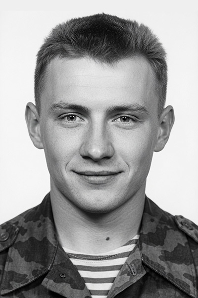
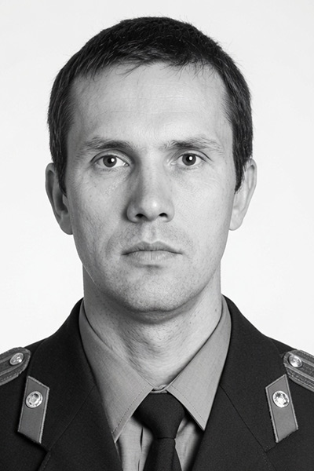
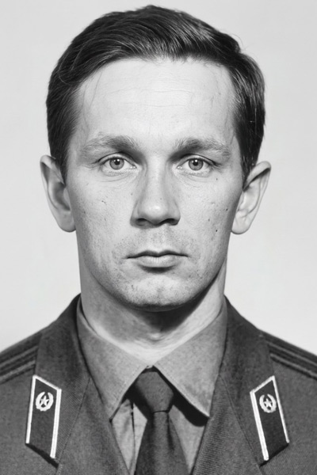
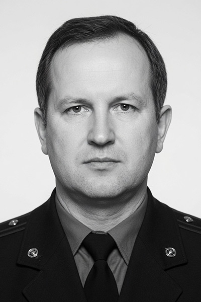

Ассоциация РУСЬ
Навечно в строю
В списки сотрудников Ассоциации «Русь» навечно занесены:

Ермаков Виталий Юрьевич
45-й отдельный гвардейский ордена Кутузова ордена Александра Невского полк специального назначения ВДВ
Родился 6 мая 1971 года в селе Семчино Рязанской области.
- 1988-1992 гг. – курсант Рязанского Высшего Военно-Десантного Командного Училища;
- 1992-1995 гг. – командир группы роты спецназа ВДВ;
- 1994 г. – переводчик группы спецназа особого отряда специального назначения.
При выполнении спецзадания, проявив мужество и героизм, погиб 31 декабря 1994 г. в Чеченской республике. В тот день подразделения 104-й воздушно-десантной дивизии пробивались на выручку блокированной 131-й мотострелковой бригады. Группа спецназа, которой командовал офицер Ермаков, обеспечивала продвижение подразделений. В ходе боя был достигнут успех, спецназовцы выполнили сложнейшую задачу и спасли многие жизни, но снайперская пуля сразила Виталия.
В июне 1995 г. Указом Президента России капитану Ермакову В.Ю. присвоено звание Герой Российской Федерации (посмертно).

Крестьянинов Андрей Владимирович
СОБР ГУОП МВД России, Начальник
Родился 10 марта 1961 года в городе Тюмень.
В 1982 году окончил Орджоникидзевское высшее военное командное училище МВД России.
За время службы награжден правительственными наградами: орденами Мужества и «За личное мужество», медалью «За отвагу».
9 января 1996 года по указанию руководства Министерства внутренних дел России был откомандирован вместе с СОБР ГУОП МВД России в Республику Дагестан для выполнения задачи по освобождению заложников, захваченных в г. Кизляр.
Операцию по освобождению заложников начали проводить 15 января 1996 г. в населенном пункте Первомайское. С рассветом 16 января сотрудники СОБР на окраине населеного пункта завязали бой с противником и благодаря четкому руководству Крестьянинова А. В. своевременно вышли на свое направление и начали практическую работу по уничтожению бандитов и освобождению заложников.
В ходе боя получили ранения два сотрудника СОБР и еще один был тяжело контужен. Приняв меры к спасению и эвакуации пострадавших, Крестьянинов А. В. из огнемета уничтожил пулеметный расчет и под огнем противника своим личным примером и практическими действиями вдохновлял подчиненных на выполнение поставленной задачи.
Примерно в 10 часов 30 минут этого дня он поставил гранатометчику задачу на уничтожение узла сопротивления, но передумал, сам взял в руки гранатомет и под шквальным огнем террористов из-за угла дома намеревался произвести по нему выстрел, но довести до конца задуманное не сумел, так как был смертельно ранен снайпером в шею. От полученного ранения того же числа он скончался в полевом госпитале города Грозный.
За героизм и мужество, проявленные при исполнении служебного долга, в условиях сопряженных с риском для жизни, а также грамотное и умелое руководство действиями подчиненных, подполковнику милиции Крестьянинову Андрею Владимировичу Указом Президента Российской Федерации № 972 от 21 июня 1996 г. присвоено звание Героя Российской Федерации (посмертно).

Ласточкин Владимир Евгеньевич
СОБР ГУОП МВД России
Родился 1 апреля 1959 года в городе Свердловске.
В 1982 году окончил Орджоникидзевское высшее военное командное училище МВД России.
Второго ноября 1995 г. по приказу руководства МВД России в составе группы сотрудников специальных отделов быстрого реагирования ГУОП МВД России вылетел в Чеченскую Республику в распоряжение Группы управления оперативного штаба МВД России для оказания практической помощи, где исполнял обязанности заместителя командира сводного отряда СОБР ГУОП МВД России.
Двадцатого декабря группа сотрудников СОБР совместно с внутренними войсками и частями министерства обороны неоднократно осуществляла попытки прорвать блокаду дудаевских формирований вокруг города Гудермес. В одном из боев он метким огнем из гранатомета уничтожил пулеметный расчет противника, что позволило подразделениям ВВ МВД РФ прорваться к зданию комендатуры города, приступить к эвакуации раненых и погибшего начальника СОБР УОП при УВД Свердловской области полковника милиции Валова Л.Г. Во время наступления на позиции боевиков майор милиции Ласточкин В.Е. получил ранение в руку, однако поле боя не покинул и продолжал вести бой. Во время эвакуации раненых, группа, которой командовал Ласточкин, подверглась нападению со стороны превосходящих сил боевиков и была вынуждена вновь принять бой на окраине г. Гудермес. При наступлении боевиками был открыт огонь из гранатометов. Ласточкин, не задумываясь, с риском для жизни, своим телом прикрыл раненого и получил тяжелое ранение в голову, отчего потерял сознание. Товарищи доставили офицера в военный госпиталь г. Грозного, где от полученного ранения 25 декабря 1995 г., не приходя в сознание, он скончался.
За героизм и мужество, проявленные при исполнении служебного долга в условиях сопряженных с риском для жизни Ласточкину Владимиру Евгеньевичу Указом Президента Российской Федерации № 1123 от 1 августа 1996 года присвоено звание Герой Российской Федерации (посмертно).

Тиньков Валерий Анатольевич
ОМОН ГУВД Московской области
Учебный центр ГУВД Московской области
Родился 12 ноября 1957 года в деревне Становая, Липецкая область.
В апреле 1995 года Тиньков В.А., как наиболее опытный командир, добровольно возглавил специальный отряд милиции ГУВД Московской области, прибывший на территорию Чеченской Республики для участия в составе федеральных сил в восстановлении конституционного порядка и ликвидации бандитских группировок Дудаева. Под руководством Тинькова В.А. отряд, наряду с охраной и контролем комендантских участков, во взаимодействии с войсковыми подразделениями осуществил боевые операции по освобождению крупных опорных пунктов сопротивления незаконных вооруженных формирований в пос. Самашки, Ачхой-Мартан, Бамут, Гудермес, Шали.
7-8 апреля 1995 г. в условиях горной местности в ночном кровопролитном бою в пос. Самашки Тиньков В.А. поднял в атаку штурмовую группу. В жестокой схватке с противником лично уничтожил пулеметный расчет и гранатометчика дудаевцев, при этом получив осколочные ранения в лицо и руку, однако из боя не вышел. С личным составом группы одним из первых ворвался в расположение противника и захватил в плен 19 бандитов.
Оставшись в строю, 14 апреля в бою с превосходящими силами бандформирований за населенный пункт Бамут, Тиньков В.А. обеспечил эффективную огневую поддержку наступающих порядков батальона внутренних войск. Оперативно оценив обстановку и применив смелый тактический маневр, он пробился с личным составом на господствующую высоту, разгромил опорный пункт противника и уничтожил склад боеприпасов. Закрепившись на высоте, Тиньков В.А. со своей группой в течение 5 часов отражал ожесточенные атаки дудаевцев, возвращавшихся на базу. В ходе этого боя было уничтожено более 80 бандитов, а командиром лично — 6 боевиков из «Мусульманского батальона смерти».
1 мая 1995 года поздно вечером сводная колонна под командованием Тинькова В.А. при въезде в Грозный подверглась внезапному нападению из засады. Сразу были подбиты головной бронетранспортер и замыкающий грузовик. Оказавшись в «клещах», колонна потеряла возможность маневра и попала под перекрестный гранатометный и автоматический огонь противника. Вызвав по радио подкрепление, Тиньков принял единственно верное решение вступить в бой и организовал оборону. Стремясь свести к минимуму потери, рассредоточив под прикрытием техники бойцов отряда, всеми имеющимися силами нанес контратакующие удары и отразил натиск дудаевцев. В тот момент, когда обстановка стабилизировалась и стало очевидным, что замысел бандитов с ходу смять и уничтожить колонну провалился, снайпер смертельно ранил Тинькова в голову. С помощью подоспевшего подкрепления противник был отброшен и рассеян. Благодаря высокому профессионализму, бесстрашному и решительному, командованию, ценой собственной жизни Тиньков В.А. спас от гибели личный состав подразделения, совершив героический подвиг.
За мужество и героизм, проявленные при выполнении боевых задач по восстановлению конституционного порядка и ликвидации незаконных вооруженных формирований на территории Чеченской Республики, майор милиции Тиньков Валерий Анатольевич Указом Президента Российской Федерации удостоен звания Герой Российской Федерации (посмертно).